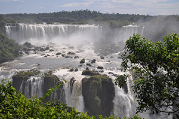
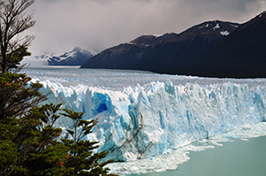

Destination: Argentina
We have Argentina from north to south and exciting locations in between. We start in Buenos Aires for our arrival in country. Visit the many landmarks of Buenos Aires, including the Plaza de Mayo, Casa Rosada (Presidential Palace) and the Cabildo. Known as the “Paris of South America,” the city’s European influences are on display in the architecture, cuisine and other facets of daily life. Stroll the lovely parks of Palermo; the charming quarters of San Telmo, birthplace of the tango; the bustling banking and business center; the barrio of La Boca; and Recoleta Cemetery where Eva Peron is interred.
Our next stop is Iguassu Falls, a breath taking natural wonder of the world with its 275 cascades that spread across a gulf of nearly two miles. We will go on a catwalk extending 3,600 feet over Devil’s Throat , a rolling cataract marking the border of Brazil and Argentina and view the many distinct falls from balconies in both countries. You will be talking about the magnificience of these massive works of nature for many years.
Barlioche, Argentina’s “Little Switzerland” in Pantagonia is our next stop. This snow peaked wonderland allows viewing some of the most attractive scenery in Argentina, a panoply of lush hills, snow-topped peaks and lakes reflecting a crisp blue sky. One of the highlights of our trip is a visit to the Perito Moreno Glacier, shown in the video below. If you are really adventurous, you can go trekking on the glacier with a small guided group.
TripSmart
1106 Beechwood
Fayetteville, AR 72704
555-848-0807
Contact Us